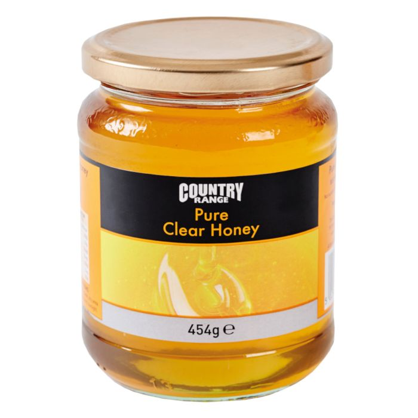
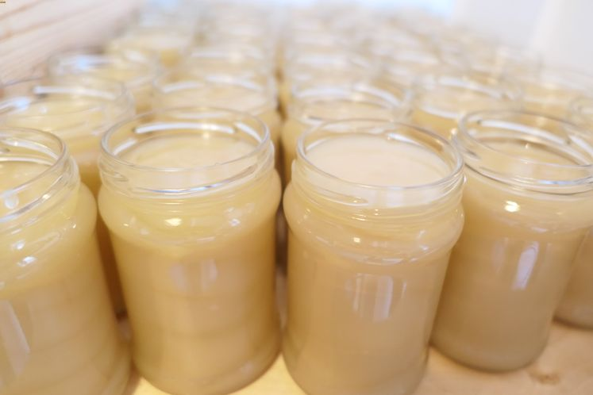
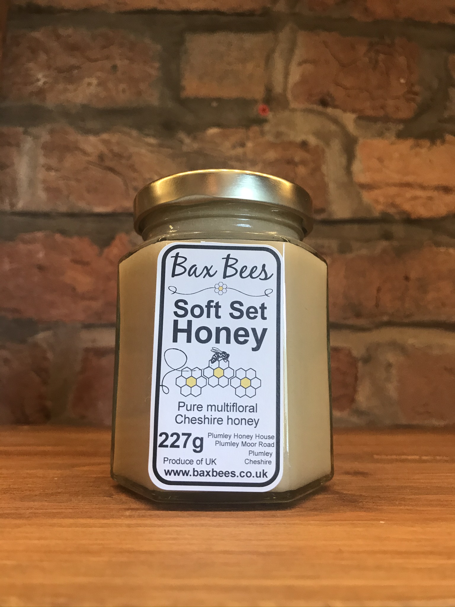

Honey
Clear Honey
Clear honey is produced by passing honey through a fine filter cloth. The honey is usually warmed to about 35 degrees celsius and then passed through the cloth. The resulting liquid should be kept warm for about 24hrs and then bottled. The process wil remove most crystals of sugar and bubbles in the honey and leave a bright clear liquid honey. If bees collect nectar fromn plants that produce high glucose honey it is probably better not to try and produce clear honey as it will rapidly revert to set honey.
Set Honey
Set honey is honey that has been jarred as a liquid and then left to granulate naturally. The sugar crystals size and therefore the 'graininess' apparent when eating the honey depends on how fast the honey granulates. High glucose honeys will granulate and therefore appear 'smoother' to taste. If the temperature is about 14 degrees celsius the maximum rate of setting is achieved; whereas below 10 degrees celsius the honey becomes very stable and does not granulate.
Soft Set Honey
Soft set honey is at the consistency of butter so that it can be spread. Virtually any honey can be soft set honey. The honey is warmed until liquid and allowed to cool to room temperature. About 10per cent of soft honey is then added to the liquid as a 'seed'. The sedding honey can either be previously produced soft set honey or a warmed jar of oil seed rape honey (which always granulates quickly to produce fine crystals). The liquid honey and seed honey are mixed making sure not air bubbles are introduced. Once mixed the honey can be bottled and left at 14 degrees celsius until set. If the honey is kept in a cool place it will remain soft for a long time.